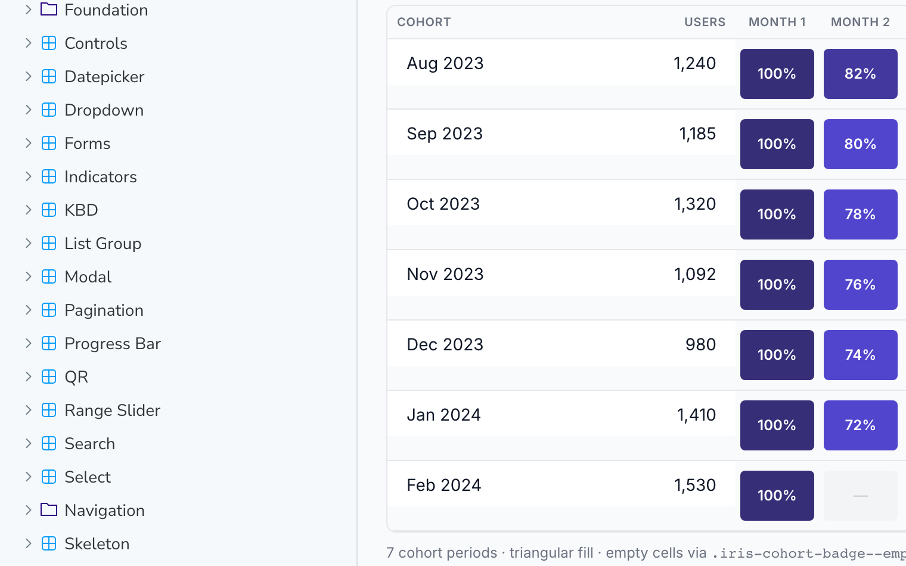

A component library developers can copy from
The system existed in Figma; the version developers could build from did not. 447 CSS classes audited against their documentation, 12 families rebuilt because the story was a drawing, not the component.